英文
英文荒木岳夫等
编者按
KamLAND反中微子探测器位于日本的神冈矿井下。它是第一个足够灵敏到通过监测来自反应堆的反中微子而探测到中微子振荡（即一种类型的中微子自发转变为另一种类型）的探测器。如荒木岳夫及其同事所指出的，该探测器也足够灵敏到可探测地球内部铀和钍放射性衰变产生的中微子。之前的估算表明，这些衰变产生的能量约占地球释放的总能量的一半，这使得放射性成为地球深部热能的一个主要来源。本文的结果与之前的数据大致吻合，并给出了更好的上限值。 英文
探测地球中天然放射性产生的电子反中微子可以提供重要的地球物理信息。神冈液体闪烁体反中微子探测器（简称KamLAND）可以探测到地球中放射元素238U和232Th衰变产生的电子反中微子（地球中微子）。地球组成模型表明，这些同位素衰变的放射性生热为16 TW，大约占地球总散失热率测量值的一半。本文介绍了KamLAND探测地球中微子的结果。假设Th / U的质量丰度比为3.9，探测到90%置信区间内地球中微子总数为4.5到54.2个。该结果与地球物理模型预测的中心值（19个）一致。尽管现有数据统计量有限，这些数据仍然以直接的方式给出了此前知之甚少的地球中U和Th放射性生热的上限（60 TW）。 英文
神冈液体闪烁体反中微子探测器（KamLAND）通过对来自核反应堆的几兆电子伏的电子反中微子（
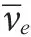
）的探测，证明了反应堆中微子振荡现象[1,2]。另外，KamLAND也是第一个足够灵敏并探测到地球中238U和232Th衰变链产生的的探测器。埃德[3]和马克思[4]第一次提出可利用来测量地球内部性质，之后该观点被引述了数次[5-10]。238U和232Th衰变链产生的具有极其小的相互作用截面，因此它们不受干扰地在地球内部传播，在地球表面附近对进行测量可获得其产生来源的信息。尽管探测40K衰变产生的对地球物理学也具有重要意义，可能用以解释地磁现象，但是它们的能量太低，不能被KamLAND探测到。来自其他长寿命同位素且能量高于我们探测阈值的反中微子被认为可忽略不计。 英文
地球的放射能
地球释放的总能量（热流）已通过热学方法[11]测得，为44.2±1.0 TW。尽管以上结果给出的误差很小，最近利用相同数据的推算[12]（假定洋中脊附近热液的热流低得多）给出一个更低的值31±1 TW。基于对球粒陨石的研究[13]，计算出的放射性生热约为19 TW，其中84%来自238U和232Th衰变。一些地幔对流模型给出的放射性生热占总能量的比例更高[14,15]。 英文
238U和232Th经过一系列已知的α衰变和β－衰变后[16]，最终分别变成稳定同位素206Pb和208Pb。每次β－衰变产生一个子核、一个电子和一个。这个的能谱已经比较精确[17]，包括对电子和子核电荷分布之间电磁相互作用的修正。图1是来自238U和232Th衰变链的预期分布，即dn(Ev) / dEv，该结果是能量（Ev）的函数。 英文
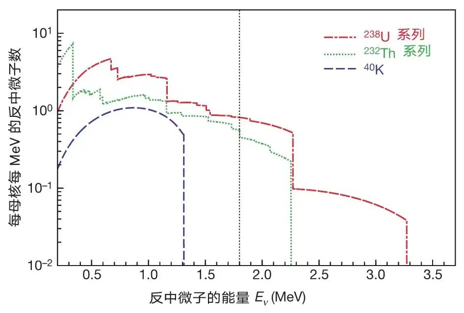
图1．从238U、232Th和40K衰变链产生的电子反中微子的预期能量分布。KamLAND只能探测到黑竖点虚线右侧部分的电子反中微子，因此对40K电子反中微子不敏感。 英文
忽略微不足道的中微子吸收，每种同位素在位置r处的预期通量如下：
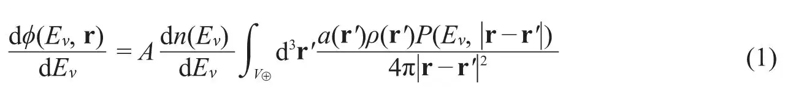
其中A是单位质量的衰变率，积分针对整个地球的体积进行，a(r')是每单位岩体质量的同位素质量， (r')是岩石密度，P(Ev,|r-r'|)是穿过|r-r'|距离后的“存活”概率。该概率从已被证实的中微子振荡现象中得来。对两种中微子味道，该概率可写为[18]
(r')是岩石密度，P(Ev,|r-r'|)是穿过|r-r'|距离后的“存活”概率。该概率从已被证实的中微子振荡现象中得来。对两种中微子味道，该概率可写为[18]
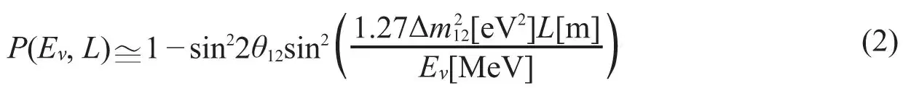
其中L=|r-r'|。利用能量高于地球中微子的反应堆的KamLAND实验[2]，并结合太阳中微子实验[19]，确定了中微子振荡参数的大小：
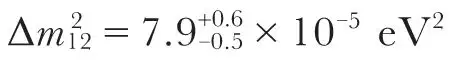
，sin22θ12=0.82±0.07。三味中微子振荡效应（<5%）和“物质效应”[20]（~1%）的修正可忽略。对典型的地球中微子能量，取P(Eν, |L|)=1-0.5sin22θ12的近似对公式（1）积分精度的影响只有1%，主要来自分散的产生地点。本文中使用这种近似，忽略了能谱的变形。 英文
地球中微子探测
KamLAND实验位于日本岐阜县池野山地下1,000米处的神冈矿井中（北纬36°25′36″，东经137°18′43″）。它通过中子反β衰变过程，在约1千吨的液体闪烁体中探测电子反中微子，
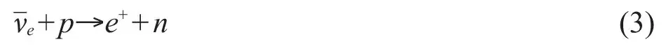
该过程的反应截面非常清楚[21]，是Ev的函数。来自e+的闪烁光被称为“快信号”，它给出入射的能量的估计值，Ev≈Ee++0.8 MeV（忽略了小的中子反冲）。此处Ee+是正电子动能加上电子–正电子的湮灭能。经过平均约200 µs的时间，中子被质子俘获，产生一个氘核和一个2.2 MeV的γ光子。探测到的2.2 MeV γ光子的闪烁光被称为“慢信号”。快慢信号在时间和位置上的符合提供了一个减少本底的强大工具。在低能中微子研究中，本底通常会制约实验灵敏度。 英文
利用地震数据构建的一个参考模型[22]将地球划分为陆壳、洋壳、地幔、地核和沉积层。部分上述区域可进一步细分，每个子区域有不同的U和Th丰度。这个模型假定地核里不含U和Th。预期KamLAND实验站点来自238U和232Th衰变链的地球中微子通量分别为2.34×106 cm－2·s－1和1.98×106 cm－2·s－1，其中考虑了来自中微子振荡的平均压低因子0.59。考虑探测截面后，KamLAND预期能捕获的来自238U和232Th衰变链的地球中微子事例率为3.85×10－31个每靶质子每年，其中79%来自238U。从图2中可以看出，预期的地球中微子通量中，很大一部分在KamLAND附近区域产生。在参考模型中细致地研究了当地的地质效应[22]，发现导致的误差小于总预期通量的10%。 英文
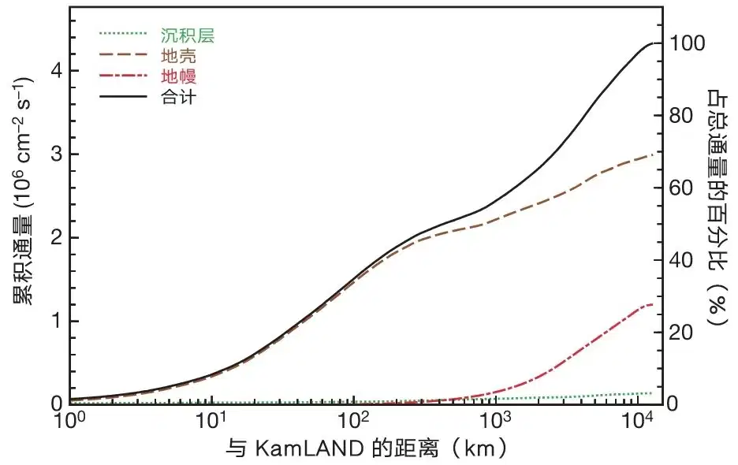
图2．在KamLAND不同距离范围内产生的238U和232Th地球中微子通量[22]。大约25%和50%的总通量来自KamLAND附近50 km和500 km范围内。图中地壳的贡献包括陆壳和几乎可忽略的洋壳的贡献。 英文
本文中的数据经过了一些基本挑选，以确保数据的可靠性，总的探测器有效时间为749.1±0.5天。基于平均靶质子密度和半径为5 m的闪烁体球形有效体积，总的靶质子数估计为（3.46±0.17）×1031个，因此总的曝光量为（7.09±0.35）×1031靶质子·年。选取有效体积内能量在1.7 MeV到3.4 MeV之间的地球中微子候选者，总探测效率为0.687±0.007。能量范围取到反β衰变的阈值以下是因为探测器存在能量分辨精度。 英文
地球中微子候选者中的本底主要来自探测器附近核反应堆产生的电子反中微子，以及探测器中放射性杂质产生的α粒子引发的中子本底。如图3所示，反应堆中微子可达到的能量比地球中微子要高得多。因此参考文献2里的振荡参数通过分析能量大于3.4 MeV的得到，此能量区间内无地球中微子信号。利用这些参数，得到反应堆中微子本底数为80.4±7.2，下面将要介绍的“事例率”分析法中用到此值。 英文
α粒子引发的中子本底来自13C(α,n)16O反应，其中α粒子来自210Po衰变，动能为5.3 MeV。210Po来自半衰期为22年的210Pb衰变。210Pb来自222Rn衰变，而222Rn污染分布在整个探测器内。13C(α,n)16O反应产生的中子最大动能为7.3 MeV。由于闪烁光在高电离密度下的淬灭效应，当中子慢化时，只有约三分之一的能量转化为“可见”能量。热中子被质子所俘获，平均俘获时间约为200 μs，产生一个与中子反β衰变相同的慢信号。13C原子核在探测器有效体积内的数量通过测量KamLAND闪烁体的13C / 12C比值得到。基于13C(α,n)16O的反应截面[23]、α粒子在闪烁体里的能量损失[24]以及210Po衰变数，预期产生的总中子数为93±22，误差主要由13C(α,n)16O反应截面的20%不确定度和210Po衰变数的14%不确定度决定。通过在质心系下测量的中子角分布计算得到中子的能量分布[25,26]，再考虑事例挑选的效率，估算出（α,n）本底大约有42±11个。 英文
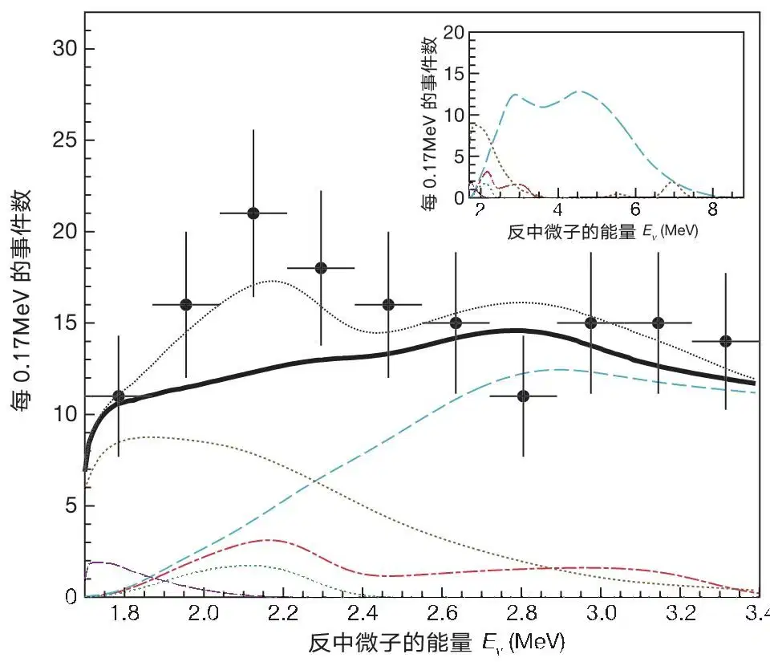
图3．KamLAND测得的电子反中微子能谱。主图为实验数据点和总的预期能谱（细黑点线）。同时显示了除地球中微子信号外所有预期能谱的总和（粗黑实线）、238U地球中微子预期信号（红点划线）、232Th地球中微子预期信号（绿点线）、反应堆中微子本底（浅蓝虚线）、13C(α,n)16O反应本底（棕点线）以及随机符合的本底（紫虚线）。小插图显示了延伸到更高能量下的预期能谱。地球中微子能谱从我们的参考模型计算而来，其中假定了238U和232Th共产生16 TW的放射性热能。误差棒代表±1倍标准偏差。 英文
其他较小的本底还包括随机符合本底、长寿命的反应堆裂变产物发生β－衰变产生的以及宇宙线产生的放射性同位素。根据信号时间窗以外的10 ms到20 s之间的符合情况来估算，约有2.38±0.01个随机符合事例。根据长寿命的反应堆裂变产物的预期能谱[27]，相应的本底估计为1.9±0.2个事例。宇宙线产生的最显著的放射性同位素本底来自末态有一个中子的β－衰变9Li→2α+n+e－+。基于与宇宙线关联的事例，由放射性的9Li产生的预期本底事例为0.30±0.05个。其他考虑过但发现可忽略不计的本底还包括自发裂变、放射性本底衰变链中的中子发射和关联衰变、宇宙线产生的快中子、（γ，n）反应以及太阳中微子引发的2H分解。总本底估计为127±13个事例（1σ误差）。 英文
观测到的候选者总数为152个，其能量分布显示在图3中。考虑到地球中微子探测的系统误差（其中一部分与本底估算误差相关联），采用事例率分析法，238U和232Th衰变链产生的地球中微子数为
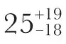
。该事例数除以探测器效率、取数时间以及靶质子数，探测到的地球中微子总事例率为每年每靶质子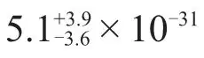
个。 英文
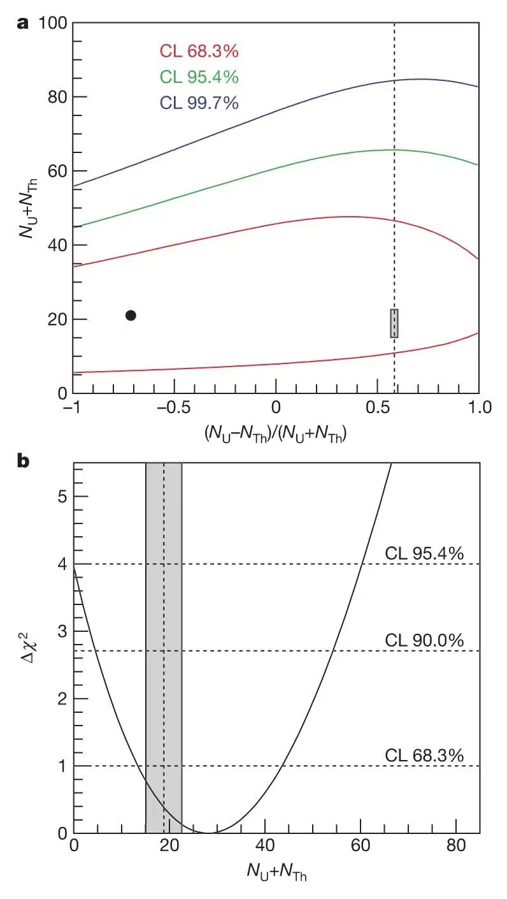
图4．探测到的地球中微子事例数的置信区间。图a是探测到的238U和232Th地球中微子数分别在68.3%置信度（红色）、95.4%置信度（绿色）和99.7%置信度（蓝色）下的等值线。小的阴影区是地球物理模型的预期，竖虚线表示基于从球粒陨石推出的Th / U质量比3.9，并考虑了238U和232Th衰变率以及KamLAND对
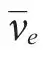
的探测效率等情况下的（NU-NTh）与（NU+NTh）的比值。黑点为最佳拟合点，倾向于238U地球中微子数为3个，232Th地球中微子数为18个。图b是Δχ2随238U和232Th地球中微子总数的函数分布，其中归一化后的差别固定到球粒陨石的限制值。灰色区域带是地球物理模型预期的NU+NTh值。 英文
我们也利用已知的信号能谱和本底能谱的形状，对1.7~3.4 MeV区间的能谱进行了一项不分能量区间的最大似然分析。中微子振荡参数对预期的地球中微子能谱形状影响很小，因此采用了无振荡的谱形。而反应堆中微子本底的谱形则包括了振荡参数。图4a显示了观测到的238U和232Th地球中微子数的置信区间。基于对球粒陨石的研究[28]，地球上Th / U的质量比被认为在3.7~4.1之间，相比于Th和U各自的绝对丰度，人们了解的Th / U质量比是更为准确的。假设Th / U的质量比为3.9，我们估计90%置信区间内238U和232Th地球中微子总数为4.5到54.2，如图4b所示。中心值28.0与前面事例率分析方法的结果一致。此处拟合参数的值分别为Δm12=7.8×10－5 eV2、sin22θ12=0.82、pα=1.0、qα=1.0，其中最后两个参数的定义在下面的方法章节中介绍。探测到的238U和232Th地球中微子总事例率的99%置信度上限为1.45×10－30个每靶质子每年，对应到达KamLAND的地球中微子通量为1.62×107 cm－2·s－1。基于我们的参考模型，这相应于238U和232Th衰变的放射性功率上限为60 TW。 英文
作为验证，使用总量为2.6×1031个靶质子·年的部分数据（包含探测器效率）进行了独立分析[29]。在分析中，13C(α,n)16O本底通过不同粒子种类产生闪烁光的微小时间分布差异得到了验证。事例的快信号是由正电子产生的闪烁光，而13C(α,n)16O本底事例的快信号是中子慢化产生的闪烁光。此分析得到稍微大一点的地球中微子信号，与本文给出的结果一致。 英文
讨论和前景
综上所述，我们利用KamLAND探测器，对来自地球内部的反中微子进行了首次实验研究。测量结果与现有的地球物理模型一致：在99%的置信限，限制了地球中U和Th发射的数小于每靶质子每年1.45×10－30个，对应于通量1.62×107 cm－2·s－1。目前正在执行计划以减少探测器中210Pb的含量，这将帮助降低由13C(α,n)16O本底带来的较大的系统误差。进一步降低本底需要一个新的远离核反应堆的实验点。本文报告的对地球中微子的研究应该为未来更准确的测量铺平了道路，这可能为探索地球提供了一个新的窗口。 英文
方法
如图5所示，KamLAND[1]由装在透明的尼龙/EVOH（乙烯–乙烯醇共聚物）复合膜气球里的1千吨超纯净的液体闪烁体组成，气球悬浮在不产生闪烁光的矿物油中。带电粒子在液体闪烁体里沉积能量，这些能量的一部分转化为闪烁光，被分布在四周的1,325个直径为17英寸的光电倍增管（PMT）和554个直径为20英寸的PMT探测到。PMT安装在直径为18米的球形不锈钢容器的内表面。包围着球形容器的是装有225个直径为20英寸的PMT的3.2千吨水切伦科夫探测器，这个外部探测器用来标记宇宙线μ子并吸收来自周围岩石的γ射线和中子。 英文
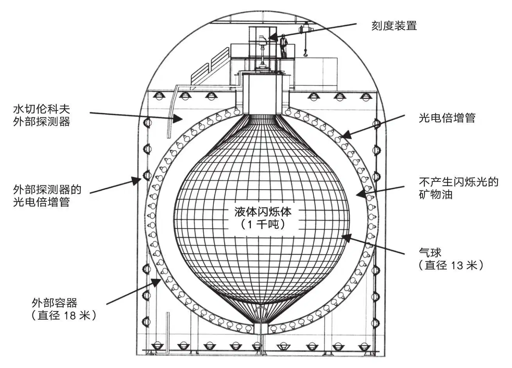
图5．KamLAND探测器的示意图 英文
根据光子到达PMT的时间分布可确定探测器内粒子发生相互作用的位置。修正探测器响应随位置的变化后，可通过探测到的总光子数确定粒子的能量。事例的位置和能量通过垂伸至探测器中心的γ源进行刻度。对事例的挑选，要求满足以下条件：快慢信号之间的时间符合（ΔT）满足0.5 μs<ΔT<500 μs；相对于探测器中心的快信号（rp）和慢信号（rd）的位置分别满足|rp|<5 m，|rd|<5 m以及|rp-rd|<1.0 m；电子反中微子的能量满足1.7 MeV<Eν<3.4 MeV；慢信号能量Ed满足1.8 MeV<Ed<2.6 MeV。 英文
假定有NU和NTh个探测到的地球中微子分别来自238U和232Th衰变链，预期探测到的全部候选者的能量分布为：
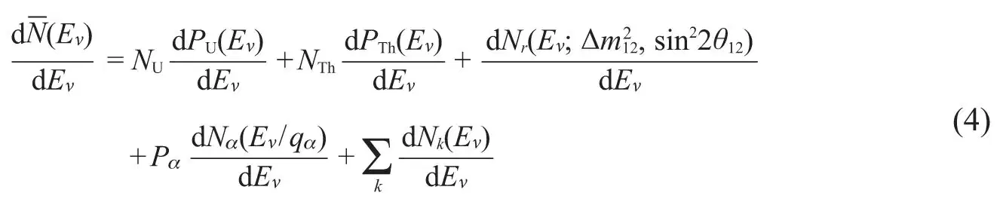
其中，dPU(Eν) / dEν和dPTh(Eν) / dEν分别是238U和232Th衰变链产生的归一化后的预期地球中微子能谱，等式右边第三项是反应堆中微子本底的能谱，它是中微子振荡参数
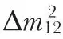
和sin22θ12的函数。dNα(Eν / qα) / dEν是13C(α,n)16O本底经过能量和事例率的缩放因子qα和pα修正后的预期能谱；最后一项是对已知其他所有本底能谱dNk(Eν) / dEν的求和。所有的能谱都包含了由探测器能量分辨引起的能量弥散。对公式（4）在1.7~3.4 MeV能量区间内进行积分给出总的预期事例数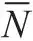
。 英文
238U和232Th衰变链产生的地球中微子数目由不分能量区间的最大似然法拟合得到。对数似然函数的定义如下，
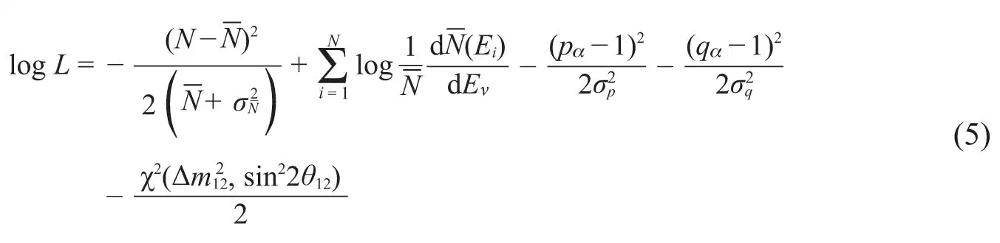
其中，N是总的观测事例数，
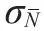
是的误差，Ei是第i个事例的能量，σp=0.24和σq=0.1分别是pα和qα的相对误差。χ2 (Δm2, sin22θ)项对KamLAND反应堆中微子测量和太阳中微子测量[30]得到的振荡参数提供了一个约束。通过改变Δm12、sin22θ12、pα和qα这四个参数，将logL在不同NU和NTh值处最大化，最大的logL即是NU和NTh的最佳拟合点。Δχ2的定义如下Δχ2=2(log Lmax-log L)
（6）
其中log Lmax是logL在最佳拟合点的值，而置信区间由Δχ2计算得到。 英文
（韩然 翻译；曹俊 审稿）